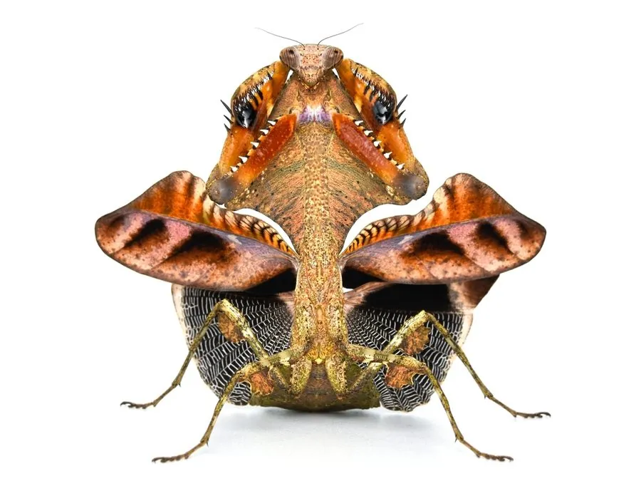

昆虫 · 动物界
叶螳 Deroplatys lobata

外形酷似枯叶的大型螳螂，前胸背板向两侧扩展成叶状，静止时几乎与落叶融为一体，是著名的拟态昆虫。
- 分类
- 门节肢动物门纲昆虫纲目螳螂目科螳螂科属叶螳属
- 栖息环境
- 热带雨林的林下落叶层和低矮植被
- 地理分布
- 马来西亚、印度尼西亚等东南亚地区
- 保护级别
- 暂无评估
物种志
叶螳雌成虫体长可达 70–80 mm，雄虫明显较小。身体扁平，体色黄褐至深褐，前胸背板向两侧扩展成宽大的叶状片，腹部也宽扁并带有叶脉状的纹理，连前翅上的斑纹都模仿了枯叶的霉斑。
叶螳分布于马来西亚、印度尼西亚等东南亚热带雨林，生活在林下的落叶层和低矮植被中。它是最著名的拟态昆虫之一：静止时把身体紧贴枝叶，宽大的叶状前胸背板和带叶脉的腹部让它几乎与一片枯叶无异，走动时还会左右摇晃，模仿被风吹动的叶子。叶螳是伏击型捕食者，捕食飞虫、蛾类和蟑螂等。雌虫把卵鞘产在树枝上，卵鞘也呈褐色。叶螳因外形奇特而成为昆虫饲养和观察的热门种类，野生种群受雨林砍伐的影响。
形态与习性
- 食性伏击捕食飞虫、蛾类和蟑螂
- 体长雌虫 70–80 mm，雄虫明显较小
- 拟态前胸背板扩展成叶状，腹部有叶脉纹理
- 行为走动时左右摇晃，模仿风吹动的叶子
- 繁殖卵鞘产在树枝上，呈褐色
- 威胁野生种群受热带雨林砍伐影响
趣味知识
- 叶螳的腹部有叶脉一样的纹路，连枯叶的霉斑都模仿得很像。
- 它走动时会左右摇晃身体，看起来就像被风吹动的叶子。
- 雌螳螂比雄螳螂大得多，是叶螳属的共同特点。